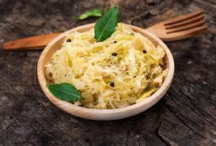

Página de Receita

1 repolho verde grande (aprox. 1 kg)
1 colher de sopa de sal (20 g) – sem iodo
(Opcional) 1 colher de chá de sementes de cominho
👨🍳 Modo de Preparo
Higienize o repolho Retire as folhas externas e corte bem fino.
Misture com o sal
Coloque em uma tigela grande e massageie por 5–10 minutos.
O repolho vai soltar bastante líquido (essa é a salmoura natural).
Coloque no pote
Transfira para um pote de vidro esterilizado.
Pressione bem até o líquido cobrir totalmente o repolho.
Fermentação
Cubra com um pano ou tampa sem fechar totalmente.
Deixe em temperatura ambiente por 3 a 7 dias.
Quanto mais tempo, mais ácido fica.
Armazenamento
Depois do sabor desejado, feche bem e guarde na geladeira.